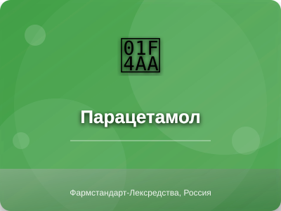

Парацетамол (Paracetamol)

Парацетамол - препарат группы анальгетики
Описание препарата
Парацетамол - анальгетик-антипиретик центрального действия. Оказывает обезболивающее и жаропонижающее действие. Механизм действия связан с ингибированием циклооксигеназы в ЦНС, воздействием на центры боли и терморегуляции. В отличие от НПВС, не обладает противовоспалительным действием и не влияет на слизистую ЖКТ.
Состав
Активное вещество: парацетамол 500 мг. Вспомогательные вещества: крахмал картофельный, желатин, стеариновая кислота, кальция стеарат.
Показания к применению
Болевой синдром слабой и умеренной интенсивности (головная боль, зубная боль, мигрень, невралгия, миалгия, альгодисменорея, боль при травмах и ожогах). Лихорадочный синдром при инфекционно-воспалительных заболеваниях.
Противопоказания
Повышенная чувствительность к парацетамолу, тяжелая печеночная и почечная недостаточность, алкоголизм, дефицит глюкозо-6-фосфатдегидрогеназы, беременность (I триместр), детский возраст до 6 лет (для данной лекарственной формы).
Категория при беременности: B
Способ применения и дозы
Внутрь, с большим количеством жидкости, через 1-2 часа после еды. Взрослым и детям старше 12 лет: по 500 мг 3-4 раза в сутки. Максимальная разовая доза - 1 г, суточная - 4 г. Интервал между приемами не менее 4 часов. Длительность применения без консультации врача - не более 3-5 дней.
Побочные действия
Редко: аллергические реакции (кожная сыпь, зуд, отек Квинке). При длительном применении в больших дозах: гепатотоксическое и нефротоксическое действие, тромбоцитопения, лейкопения, агранулоцитоз.
Взаимодействие с другими лекарствами
Усиливает действие непрямых антикоагулянтов. Снижает эффективность урикозурических препаратов. Индукторы микросомальных ферментов печени повышают риск гепатотоксического действия. Алкоголь усиливает гепатотоксичность парацетамола.
Передозировка
Симптомы: бледность, тошнота, рвота, боль в животе, через 12-48 часов - признаки нарушения функции печени. Лечение: немедленная госпитализация, промывание желудка, введение донаторов SH-групп (ацетилцистеин), симптоматическая терапия.
Условия хранения
При температуре не выше 25°C в защищенном от света месте. Срок годности - 3 года.
Производитель
Фармстандарт-Лексредства, Россия
Информация предоставлена в ознакомительных целях. Перед применением проконсультируйтесь с врачом. Данная инструкция не является руководством к самолечению.